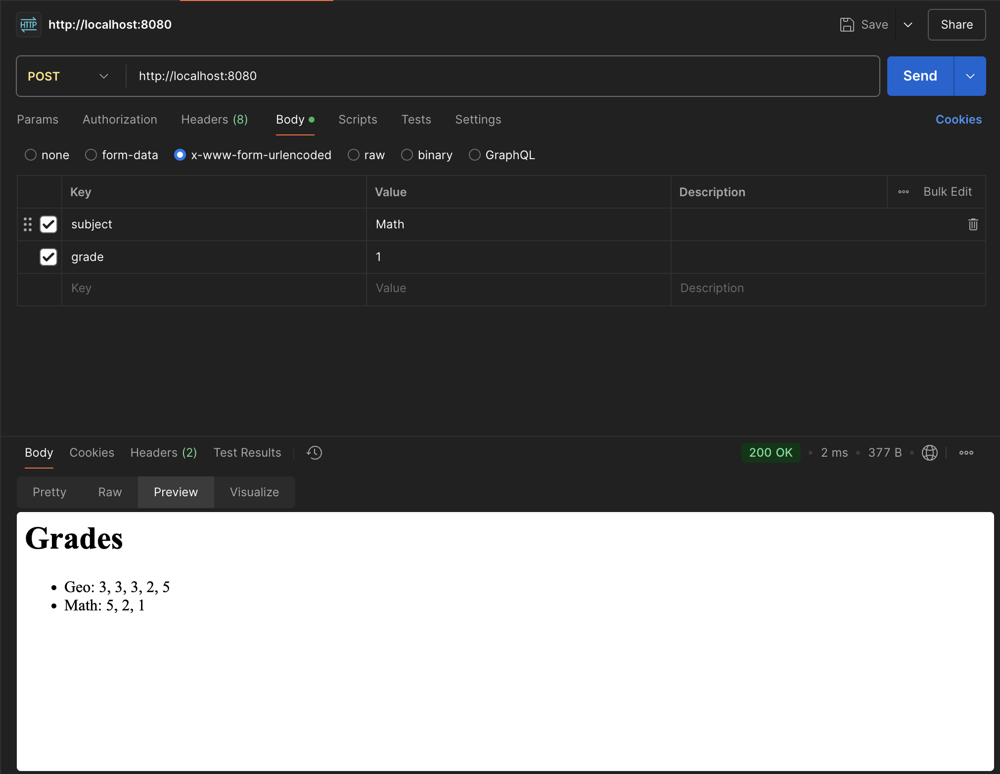

Задание 5
Суть задания
Написать простой веб-сервер для обработки GET и POST HTTP-запросов с помощью библиотеки socket в Python
Требования: Cервер должен: - Принять и записать информацию о дисциплине и оценке по дисциплине - Отдать информацию обо всех оценках по дисциплинам в виде HTML-страницы
Код программы
index.html
<!DOCTYPE html>
<html lang="en">
<head>
<meta charset="UTF-8">
<meta name="viewport" content="width=device-width, initial-scale=1.0">
<title>Grades</title>
</head>
<body>
<h1>Grades</h1>
<ul id="grades-list"></ul>
</body>
</html>
server.py
import socket
from urllib.parse import parse_qs
# Список для хранения оценок
# Формат: [{"subject": "Biology", "grades": ["4", "5"]}]
grades = []
def load_html_template():
try:
with open('index.html', 'r', encoding='utf-8') as file:
return file.read()
except FileNotFoundError:
return ("<html><body><h1>Ошибка: файл шаблона index.html не найден.</h1></body></html>")
def handle_client(conn):
try:
request = conn.recv(1024).decode()
print(f"Запрос:\n{request}")
lines = request.splitlines()
if not lines:
return
request_line = lines[0].split()
if len(request_line) < 2:
return
method = request_line[0]
path = request_line[1]
if method == 'GET' and path == '/':
html_template = load_html_template()
grades_list = "".join(
f"<li>{item['subject']}: {', '.join(item['grades'])}</li>"
for item in grades
)
response_html = html_template.replace('<ul id="grades-list"></ul>', f'<ul id="grades-list">{grades_list}</ul>')
response = "HTTP/1.1 200 OK\n"
response += "Content-Type: text/html; charset=utf-8\n"
response += "Connection: close\n\n"
response += response_html
conn.sendall(response.encode())
elif method == 'POST' and path == '/':
body = lines[-1]
print(f"Тело POST-запроса: {body}")
params = parse_qs(body)
subject = params.get('subject', [''])[0].strip()
grade = params.get('grade', [''])[0].strip()
if subject and grade:
existing_item = next((item for item in grades if item['subject'] == subject), None)
if existing_item:
existing_item['grades'].append(grade)
else:
grades.append({"subject": subject, "grades": [grade]})
response = "HTTP/1.1 303 See Other\n"
response += "Location: /\n"
response += "Connection: close\n\n"
conn.sendall(response.encode())
else:
response = "HTTP/1.1 400 Bad Request\n"
response += "Content-Type: text/html; charset=utf-8\n"
response += "Connection: close\n\n"
response += "<html><body><h1>Неверные параметры!</h1></body></html>"
conn.sendall(response.encode())
else:
response = "HTTP/1.1 404 Not Found\n"
response += "Content-Type: text/html; charset=utf-8\n"
response += "Connection: close\n\n"
response += "<html><body><h1>Страница не найдена</h1></body></html>"
conn.sendall(response.encode())
except Exception as e:
print(f"Ошибка обработки запроса: {e}")
finally:
conn.close()
def start_server():
server_socket = socket.socket(socket.AF_INET, socket.SOCK_STREAM)
server_socket.bind(('localhost', 8080))
server_socket.listen(5)
print("Сервер запущен. Ожидание подключений на http://localhost:8080")
try:
while True:
conn, addr = server_socket.accept()
print(f"Подключен: {addr}")
handle_client(conn)
except KeyboardInterrupt:
print("\nСервер остановлен вручную.")
finally:
server_socket.close()
print("Сервер закрыт.")
if __name__ == "__main__":
start_server()
Как работает
Запросы выполнял с помощью Postman'a
